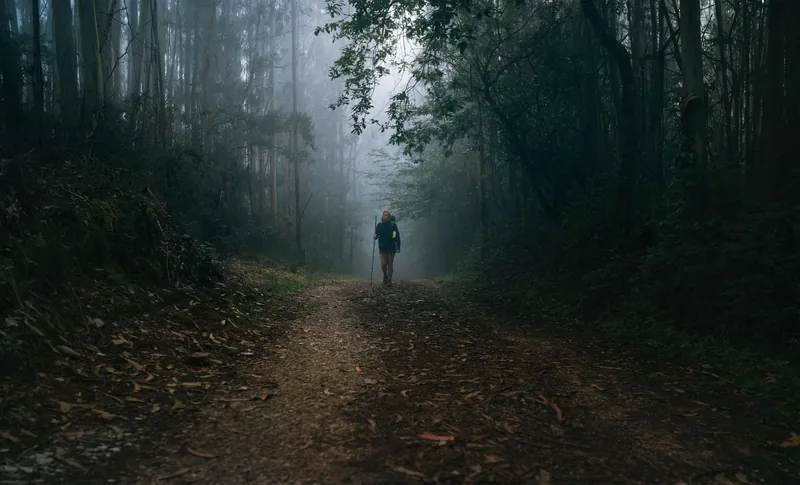

Sechs Wandertage und eine Bootsetappe. Ein gemeinsamer Weg – und unzählige Geschichten dazwischen.
Heiliges Jahr 2027 · Die Heilige Pforte in Santiago ist offen
Die Reise entdecken«Manchmal geht es beim Reisen nicht darum, möglichst viel zu sehen. Sondern darum, gemeinsam unterwegs zu sein.»
Der zweitbeliebteste Jakobsweg der Welt: durch das grüne Galicien, über alte Steinbrücken und entlang der Rías Baixas. Ab Pontevedra nehmen wir die Variante Espiritual mit Combarro, dem Kloster Armenteira und der Bootsfahrt Translatio den Ulla hinauf.
Summe der sieben Etappen laut Komoot, zu Fuss, ohne Bootsstrecke.
Die Reise
Der Tag beginnt auf den Mauern der Festung Valença und führt über die Eisenbrücke von 1885 nach Tui – ein Grenzübertritt zu Fuss, hoch über dem Minho. Hinter der Kathedrale wird es still: Waldwege, kleine Weiler, der Río Louro.
In Tui gibt es den ersten Stempel auf spanischem Boden. Danach bleibt der Weg meist flach auf Wald- und Feldwegen. Vor O Porriño führt die Hauptroute durch ein Industriegebiet – die ausgeschilderte Variante am Fluss ist schöner und kaum länger.
Ein kurzer Tag auf alten Spuren: Die römische Via XIX führt durch Mos hinauf zur Kapelle Santiaguiño de Antas. Oben liegt plötzlich die Ría de Vigo unter euch – zum ersten Mal Meer auf diesem Weg.
Der Anstieg ist gleichmässig, der Abstieg nach Redondela steil und auf glatten Granitplatten – hier helfen Stöcke. Redondela ist klein und lebendig, zwei Eisenbahnviadukte spannen sich über den Ort. Mit gut vier Stunden Gehzeit bleibt der Nachmittag frei.
Die abwechslungsreichste Etappe: der Ría entlang nach Arcade, wo es mittags Austern gibt, über die mittelalterliche Brücke von Ponte Sampaio und auf Granitplatten durch den Wald. Am Abend wartet Pontevedra mit seiner autofreien Altstadt.
Hinter Ponte Sampaio steigt die Verea Vella da Canicouva an, ein alter Pilgerpfad aus Stein – der anstrengendste Abschnitt des Tages. An der Brücke wurden 1809 Napoleons Truppen zurückgeschlagen. In Pontevedra lohnt ein Abendspaziergang über die Plätze der Altstadt bis zur muschelförmigen Kirche der Peregrina.
Hier beginnt die Variante Espiritual. Vom Kloster Poio geht es hinunter nach Combarro, wo die Hórreos direkt über dem Wasser stehen – und dann durch den Wald hinauf zum Kloster Armenteira, still und abgelegen am Hang des Monte Castrove.
Nach Combarro folgt der steilste Aufstieg der Reise: rund 400 Höhenmeter fast am Stück. Armenteira ist ein Weiler mit Kloster und zwei Lokalen, aber ohne Laden. Am Abend singen die Zisterzienserinnen das Abendgebet.
Gleich hinter dem Kloster beginnt die Ruta da Pedra e da Auga: Der Weg folgt dem Río Armenteira abwärts, über Steinstufen, an Wasserfällen und Dutzenden alten Mühlen vorbei. Dann öffnet sich das Land – Albariño-Reben, Dörfer und am Ende die Ría de Arousa.
Es geht fast nur bergab, unterschätzen sollte man den langen Tag trotzdem: Die Steinpfade am Bach sind bei Nässe rutschig. Ab dem Talboden wird es flach, teils auf Asphalt durch die Weinberge. Die letzten Kilometer führen an Stränden entlang nach Vilanova.
Der besondere Tag: Ihr folgt per Boot der Legende – auf diesem Weg soll der Leichnam des Jakobus nach Galicien gekommen sein, durch die Ría de Arousa und den Ulla hinauf. Am Ufer stehen 17 Steinkreuze – ein Kreuzweg auf dem Wasser, wie es ihn sonst nirgends gibt.
Morgens ein kurzer Weg zum Anleger (6a), dann gut eine Stunde auf dem Wasser, vorbei an den Torres de Oeste. Ab Pontecesures führt 6b über das Kloster Herbón – hier sollen die ersten Pimientos de Padrón gewachsen sein – nach Padrón. Der Abend gehört dem Städtchen und seinen Pimientos: «uns pican, outros non».
Der letzte Tag zu Fuss und der längste: vom alten Bischofssitz Iria Flavia durch Dörfer und die Wälder von Teo. Irgendwann tauchen die Türme der Kathedrale auf – über die Ponte Vella geht es in die Stadt und hinauf auf die Praza do Obradoiro.
Viele kurze Auf und Ab, gegen Ende zieht sich der Weg durch die Vororte. Früh starten lohnt sich: Wer am frühen Nachmittag ankommt, kann die Compostela noch am selben Tag im Pilgerbüro abholen.
Compostela im Pilgerbüro abholen (Rúa das Carretas 33), um 12 Uhr Pilgermesse – früh da sein. Mittag im Mercado de Abastos, am Nachmittag mit dem Zug in gut einer halben Stunde nach A Coruña. Abends an der Marina oder hinaus zum Torre de Hércules.
Reise organisieren
Flüge bestätigt. Buchungsnummern stehen bewusst nicht auf der öffentlichen Seite.
Hotelnummern stehen unten bei jeder Unterkunft. EU-Krankenversicherungskarte (EHIC) und Reiseversicherung mitnehmen.
| Noch offen | ||
| Transfer Porto → Valença + Gepäcktransport | Offerte | ~CHF 90 |
| Boot Translatio Vilanova → Pontecesures | offen | ca. 32 € (Anbieterpreis 2026) |
| Geschätzt | ||
| Essen & Trinken, 10 Tage | Schätzung | CHF 260–370 |
| Lokale Fahrten (Zug A Coruña, Taxi) | Schätzung | CHF 30–50 |
| Eintritte & Diverses | Schätzung | CHF 30–50 |
| Total ohne Flüge, Unterkünfte und Boot | CHF 410–560 | |
Summe der Positionen oben (Offerte CHF 90 + Schätzungen CHF 320–470).
Ausgaben unterwegs (Essen, Taxi, Boot, Eintritte) gleich nach dem Bezahlen in Splitwise eintragen, Währung EUR. Am Schluss zeigt Splitwise, wer wem wie viel schuldet – einmal ausgleichen, fertig.
Splitwise öffnen ↗Empfehlungen pro Abend – noch keine Reservation bestätigt. Abendessen ab ca. 20:30, für vier reservieren. Bib Gourmand: Guía Michelin 2026.
A5-Heft mit allen Tagen, Hotels, Telefonnummern und Startzeiten – als Notlösung ohne Handy-Akku. Im Druckdialog «Als PDF sichern» wählen.
Auf den letzten 100 km mindestens 2 Stempel pro Tag – am einfachsten jeden Tag sammeln.
Messen in der Kathedrale um 7:30, 9:30, 12:00 und 19:30 Uhr; die Pilgermesse um 12 Uhr ist die bekannteste. 30–45 Minuten vorher dort sein, keine Rucksäcke (vorher ins Hotel). Wegen Bauarbeiten in der Hauptkapelle finden die Messen seit Oktober 2026 teilweise in der Kirche San Agustín statt – vor der Reise auf catedraldesantiago.es prüfen.
| Jahr | Ø Max | Ø Min | Regen |
|---|